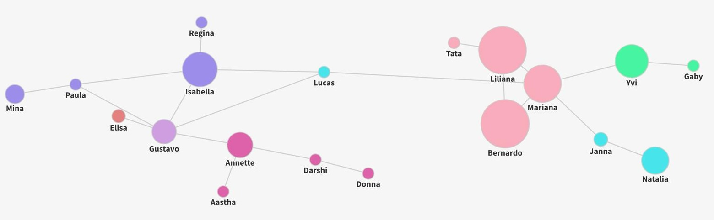

Exploring my call log history for 16 days
In corporate settings, call logs can help measure customer service performance or assess telecommunication call service. In personal settings, call logs can serve as evidence in criminal investigations. Both scenarios likely analyze volume, frequency, and call duration metrics. However, the average personal user does not typically analyze their call history information.
I exported my call logs from my cellphone provider and manually combined them with my internet calls through WhatsApp and Facetime for the past 16 days. I then cleaned the dataset to exclude spam and non-personal calls. During my process, I ranked who I spoke to the most and grouped people to recognize social circle patterns.
I explored the rankings of who I spoke to the most.
I explored the various groups of people I spoke with.
Even though the ranking was telling, as Data Feminism teaches, considering context highlights hidden patterns and motivations. These numbers don’t show that I currently live in Atlanta with my boyfriend, Gustavo, I see him daily, and our conversations mainly occur in person. I’m also slowly building a social circle in Atlanta, but many of the people I speak to here, I talk to in person and are not represented in my call log history dataset. These hidden patterns are addressed by incorporating a timeline that contextualizes my relationships.
Additionally, the highest-ranked relationship on my call logs is my father, Bernardo. However, what is not evident is the emotional turmoil he has been experiencing in the last few weeks. I have recently had uncharacteristically long calls trying to talk him out of negative thought spirals and reassure him that he has countless blessings. This could have been accounted for by additionally recording and visualizing conversation topics.
The unconventional format I explored was a network, where I visualized a dataset of the relationships in my life, contextualized by my call log history dataset. Each node is someone I talked to on the phone in the past 16 days, the size is the total number of minutes, the colors are what social circles they belong to, and the links are the relationships between these people.
I received a critique from classmates on the first iteration. The three most common comments were a desire for more context around when/how I met the people in my network diagram, call frequency, and where I fit into all the relationships.
My final design addresses the three main critique points and involves a third dataset to add the context of when/where I made these relationships. I also refined the links to only show independent relationships and not acquaintances mediated through me, and I added extra pop-up information such as total minutes and call frequency.